ROCK-METAL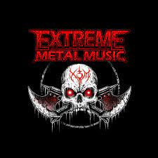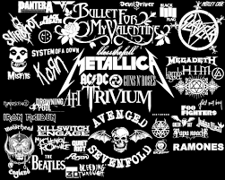
El rock es un amplio género de música popular originado como rock and roll a principios de la década de 1950 en Estados Unidos y que derivaría en un gran rango de diferentes estilos durante mediados de los años 60 y posteriores, particularmente en ese país y Reino Unido. Tiene sus raíces en el rock and roll de los años 50, estilo nacido directamente de géneros como el blues, el rhythm and blues (pertenecientes a la música afroamericana) y el country. También se nutrió fuertemente del blues eléctrico y el folk, además de incorporar influencias del jazz y la música clásica, entre otras fuentes. Instrumentalmente, el rock se ha centrado en la guitarra eléctrica, normalmente como parte de un grupo integrado por batería, bajo, uno o más cantantes y, algunas veces, instrumentos de teclado como el órgano y el piano. Usualmente, el rock se basa en canciones en compás de 4/4 y una estructura verso-estribillo; sin embargo, el género se ha vuelto extremadamente diverso y las características comunes son difíciles de definir. Como la música pop, las letras se centran a menudo en el amor romántico, pero también tratan un rango amplio de otros temas con un enfoque frecuente en lo social, lo personal y lo político.
A mediados de la década de 1960, los músicos de rock comenzaron a adoptar el álbum como medio dominante de difusión, expresión y consumo de música grabada, con The Beatles como la cara principal del desarrollo comercial del género. Sus contribuciones llevarían a la legitimación cultural del rock en el mainstream, iniciando así una época del álbum en la industria musical que perduraría varias décadas. Ya a finales de los 60, referido como el periodo del «rock clásico», habían surgido numerosos subgéneros, incluidos híbridos como el blues rock, folk rock, country rock, rock sureño, raga rock y el jazz rock, muchos de los cuales contribuirían al desarrollo del rock psicodélico, influenciado por la escena contracultural psicodélica y hippie. Los nuevos géneros que emergieron de esta escena incluyen el rock progresivo, que extendió los elementos artísticos; el glam rock, que resaltó el espectáculo en vivo y el estilo visual y el heavy metal, que se centra en el volumen, el poder y la velocidad. En la segunda mitad de los años 1970, el punk intensificó y reaccionó contra algunas de estas tendencias para producir una música cruda y energética, así como altamente política. Durante la década de 1980, el punk fue una de las principales influencias en el desarrollo de otros subgéneros como el new wave, el post-punk y, eventualmente, el rock alternativo.
| ARTISTAS |
Canciones |
|---|
| 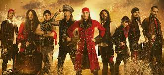 | Panic! at the Disco es un grupo estadounidense de rock formado en Las Vegas en 2004 por Ryan Ross y Spencer Smith. Tras varios cambios en su formación, desde 2015 está integrado únicamente por el cantante Brendon Urie, a quien en las giras acompañan Nicole Row en bajo, Mike Naran en guitarra y Dan Pawlovich en batería. Después de grabar sus primeras maquetas mientras se encontraban todavía en la secundaria, en 2005 publicaron su primer álbum de estudio, A Fever You Can't Sweat Out. Alentado por el sencillo «I Write Sins, Not Tragedies», el disco fue certificado doble platino en Estados Unidos. En 2006 Brent Wilson fue despedido y Jon Walker lo sustituyó como bajista. |
Hechizos,Pocimas y Brujeria |
| 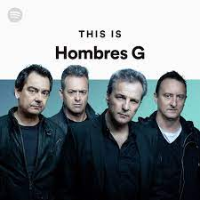 | Hombres G es una banda musical española de rock and roll y pop rock. Esta banda fue fundada en Madrid en 1982 por su vocalista y bajista David Summers y uno de sus guitarristas, Rafa Gutiérrez, junto con Javier Molina (batería) y Daniel Mezquita (guitarra). A mediados de los años 80 se popularizó en España con su primer álbum, para después ser conocidos internacionalmente, principalmente en Hispanoamérica.
Hasta la fecha la banda ha editado doce álbumes de estudio: Hombres G (1985), La cagaste... Burt Lancaster (1986), Estamos locos... ¿o qué? (1987), Agitar antes de usar (1988), Voy a pasármelo bien (1989), Ésta es tu vida (1990), Historia del bikini (1992), Peligrosamente juntos (2002), Todo esto es muy extraño (2004), 10 (2007), Desayuno continental (2010) Resurrección (2019), La esquina de Rowland (2021). |
Los Guapos del Barrio |
| Skillet es una banda de rock cristiano y metal cristiano originaria de Tennessee, fundada en 1996 y conformada por John y Korey Cooper, Seth Morrison y Jen Ledger. El grupo ha publicado once álbumes de estudio, el más reciente, Dominion, en el 2022. Dos de sus discos, Collide y Comatose recibieron nominación al Grammy. El sonido de la banda se ha descrito como rock alternativo, hard rock, y rock sinfónico, y ha sido caracterizada por elementos electrónicos. |
Monster |
| Linkin Park es una banda estadounidense de rock alternativo procedente de Agoura Hills, California formada en 1996. Integrada por Mike Shinoda, Dave Farrell, Joe Hahn, Brad Delson, Rob Bourdon y Chester Bennington, este último como voz principal. La banda comenzó con sus primeros trabajos musicales de manera independiente, en la que grabaron su primer material, llamado Xero; sin embargo, no tuvieron éxito en la búsqueda de un sello discográfico, ya que nadie mostraba interés por su trabajo. Fue hasta 1999, que con el apoyo de Jeff Blue, el entonces vicepresidente de Warner Records, lograron firmar su primer contrato. El nombre del grupo es un juego de palabras que hace referencia al Lincoln Park en Santa Mónica.
En octubre de 2000, el grupo lanzó su álbum debut, titulado Hybrid Theory, en el que se encuentran sencillos populares como «Crawling», «Papercut», «In the End» y «One Step Closer»; los últimos dos obtuvieron certificación de disco de oro en Australia. Hybrid Theory que alcanzó el puesto número dos en el Billboard 200, fue el séptimo álbum más vendido de la década del 2000, y certificado con disco de diamante en los Estados Unidos y múltiple disco de platino en Europa. El cuarto sencillo del álbum, «In the End», alcanzó su mayor posición al situarse en el segundo puesto de la lista Billboard Hot 100.
|
Burn it Down |
CLASICA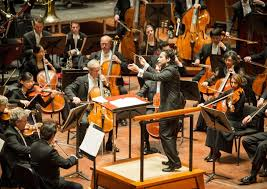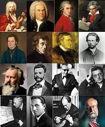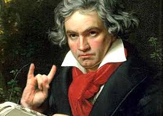
La música clásica (también llamada música académica) es la corriente musical que se basa principalmente en la música producida o derivada de las tradiciones de la música litúrgica y secular de Occidente, principalmente Europa Occidental, y que posee un referente de transmisión fundamentalmente de tipo escrito, lo cual le da un sentido y carácter riguroso para su reproducción o interpretación. Aunque de forma amplia abarca un periodo de tiempo que va aproximadamente del siglo xi a la actualidad, es frecuente que se restrinja su uso para referirse a la Música Académica anterior al siglo xx, aunque en esencia y a pesar de que la música clásica propia del siglo xx posee estilísticamente diferencias substanciales con la producida en siglos anteriores, es esta considerada el resultado del mismo proceso evolutivo experimentado anteriormente. Si bien, las principales características del género fueron codificadas principalmente entre 1550 y 1900, que es habitualmente considerado como el período característico de producción de la música clásica, su desarrollo se extiende a todo el siglo xx y xxi. En un sentido historiográfico, la música clásica antigua se divide en varios periodos: música antigua o medieval, que abarca el periodo comprendido por la Baja Edad Media en Europa (1000-1400); la música renacentista (1400-1600); la música barroca, que coincide con desarrollo del arte barroco (1600-1750); el clasicismo (1750-1800), que en la Historia de la música y la musicología es a veces llamado «música clásica»; el Romanticismo (1800-1910); y la música contemporánea, que comprende las distintas corrientes de música clásica del siglo xx, que adopta la composición atonal y disonante y otras tendencias opuestas a corrientes anteriores.
| ARTISTAS |
Canciones |
|---|
| 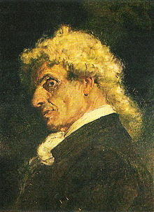 | Giuseppe Tartini (8 de abril de 1692 - 26 de febrero de 1770) fue un músico italiano, violinista, compositor y estudioso de la música de su tiempo (barroco). Fue uno de los mayores virtuosos del violín de su época; sus innovaciones en el estudio del violín solo fueron superadas con la llegada de Niccolò Paganini (1782-1840).
Tartini nació en Pirano, ciudad de la península de Istria, en la entonces República de Venecia, hoy Pirán, Eslovenia. Su madre era eslovena y su padre un veneciano comerciante de sal y administrador de tierras en la costa de Istria. A Tartini, segundo de cuatro hermanos, su padre le destinó a la vida eclesiástica. Fue el mejor alumno de la Escuela de San Felipe Neri de Pirano. Con doce años, en 1704, ingresó en el Colegio de los Padres de las Escuelas Pías de Capodistria (hoy Koper), donde recibiría una formación musical básica; allí empezó su amistad con Antonio Vandini, que duraría toda la vida.
|
Devil's Trill Sonata |
| 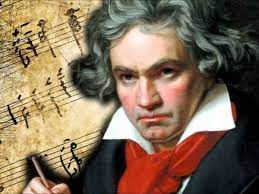 | Ludwig van Beethovena (Bonn, Arzobispado de Colonia; 16 de diciembre de 1770b-Viena, 26 de marzo de 1827) fue un compositor, director de orquesta, pianista y profesor de piano alemán. Su legado musical abarca, cronológicamente, desde el Clasicismo hasta los inicios del Romanticismo. Es considerado uno de los compositores más importantes de la historia de la música y su legado ha influido de forma decisiva en la evolución posterior de este arte.
Siendo el último gran representante del clasicismo vienés (después de Christoph Willibald Gluck, Joseph Haydn y Wolfgang Amadeus Mozart), Beethoven consiguió hacer trascender la música del Romanticismo, influyendo en diversidad de obras musicales del siglo xix. Su arte se expresó en numerosos géneros y aunque las sinfonías fueron la fuente principal de su popularidad internacional, su impacto resultó ser principalmente significativo en sus obras para piano y música de cámara.
Su producción incluye los géneros pianístico (treinta y dos sonatas para piano), de cámara (incluyendo numerosas obras para conjuntos instrumentales de entre ocho y dos miembros), concertante (conciertos para piano, para violín y triple), sacra (dos misas, un oratorio), lieder, música incidental (la ópera Fidelio, un ballet, músicas para obras teatrales), y orquestal, en la que ocupan lugar preponderante Nueve sinfonías. |
5ta Sinfonía |
| 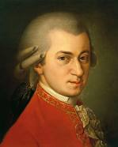 | Johannes Chrysostomus Wolfgangus Theophilus Mozarta (Salzburgo, 27 de enero de 1756-Viena, 5 de diciembre de 1791), más conocido como Wolfgang Amadeus Mozart, fue un compositor, pianista, director de orquesta y profesor del antiguo Arzobispado de Salzburgo (anteriormente parte del Sacro Imperio Romano Germánico, actualmente parte de Austria), maestro del Clasicismo, considerado como uno de los músicos más influyentes y destacados de la historia.
La obra mozartiana abarca todos los géneros musicales de su época e incluye más de seiscientas creaciones, en su mayoría reconocidas como obras maestras de la música sinfónica, concertante, de cámara, para fortepiano, operística y coral, logrando una popularidad y difusión internacional.
En su niñez más temprana en Salzburgo, Mozart mostró una capacidad prodigiosa en el dominio de instrumentos de teclado y del violín. Con tan solo cinco años ya componía obras musicales y sus interpretaciones eran del aprecio de la aristocracia y realeza europea. A los diecisiete años fue contratado como músico en la corte de Salzburgo, pero su inquietud le llevó a viajar en busca de una mejor posición, siempre componiendo de forma prolífica. Durante su visita a Viena en 1781, tras ser despedido de su puesto en la corte, decidió instalarse en esta ciudad, donde alcanzó la fama que mantuvo el resto de su vida, a pesar de pasar por situaciones financieras difíciles. En sus años finales, compuso muchas de sus sinfonías, conciertos y óperas más conocidas, así como su Réquiem. Las circunstancias de su temprana muerte han sido objeto de numerosas especulaciones y elevadas a la categoría de mito. |
turkish march marcha turca |
| 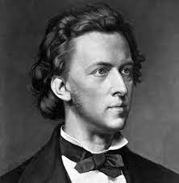 | Frédéric François Chopinnota (en polaco Fryderyk Franciszek Chopin;nota Żelazowa Wola, Gran Ducado de Varsovia, 1 de marzo nota 3 de 1810-París, 17 de octubre de 1849) fue un profesor, compositor y virtuoso pianista polaco, considerado uno de los más importantes de la historia y uno de los mayores representantes del Romanticismo musical. Su maravillosa técnica, su refinamiento estilístico y su elaboración armónica se han comparado históricamente, por su influencia en la música posterior, con las de Wolfgang Amadeus Mozart, Ludwig van Beethoven, Johannes Brahms, Franz Liszt o Serguéi Rajmáninov.
La descendencia pedagógica de Chopin llegó hasta pianistas como Maurizio Pollini y Alfred Cortot, por medio de Georges Mathias y Emile Descombes, respectivamente. |
nocturne |
ELECTRONICA
La música electrónica es aquel tipo de música que emplea instrumentos musicales electrónicos y tecnología musical electrónica para su producción e interpretación. En general, se puede distinguir entre el sonido producido mediante la utilización de medios electromecánicos, de aquel producido mediante tecnología electrónica, que también pueden ser mezclados. Algunos ejemplos de dispositivos que producen sonido electro-mecánicamente son el telarmonio, el órgano Hammond y la guitarra eléctrica. La producción de sonidos puramente electrónicos pueden lograrse mediante aparatos como el theremín, el sintetizador de sonido o el ordenador.
La música electrónica se asoció originalmente y de manera exclusiva a una forma de música culta occidental, pero desde finales del año 1960, la disponibilidad de tecnología musical a precios accesibles propició que la música producida por medios electrónicos se hiciera cada vez más popular. En la actualidad, la música electrónica presenta una gran variedad técnica y compositiva, abarcando desde formas de música culta experimental hasta formas populares como la música electrónica de baile o shuffle dance.
| ARTISTAS |
Canciones |
|---|
 | Sonny John Moore (Los Ángeles, 15 de enero de 1988), conocido por su nombre artístico Skrillex, es un cantante, productor discográfico y pinchadiscos estadounidense.Sonny John Moore nació el 15 de enero de 1988 en Highland Park, un vecindario situado al noroeste de Los Ángeles, California. Hijo adoptivo de Scott y Francis Moore, desarrolló parte de su infancia en Forest Hill —una pequeña comunidad localizada en la ciudad de San Francisco— bajo una crianza carente de límites por parte de sus ascendientes. Pasado su primer lustro comenzó a idolatrar a Michael Jackson y se interesó tanto por el baile como por la música, pero no fue hasta sus nueve años que se propuso ser músico tras recibir una guitarra con motivo de las fiestas navideñas de 1997. Gracias a esto, inició su formación como guitarrista en el Guitar Center de San Francisco. Luego de asistir a un internado en el Desierto de Mojave, volvió con sus padres a la ciudad de Los Ángeles donde fue inscrito en una escuela de artes privada. Allí dieron comienzo sus problemas escolares, por lo que en su preadolescencia atravesó una fase emo y empezó a recibir acoso por parte de sus compañeros de institución. Moore presentaba problemas de comportamiento en su colegio, y tras ser descubierto por los dirigentes del mismo a los catorce años fumando un cigarrillo, pidió permiso a sus padres para dejar de asistir a su instituto y comenzó a tomar clases en casa. |
Mind |
| 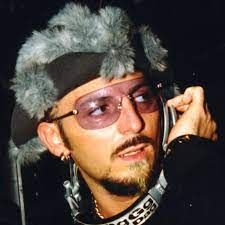 | Luigino Celestino D'Agostino (Turín, Italia, 17 de diciembre de 1967), conocido como Gigi D’Agostino, es un DJ y productor discográfico italiano. Es uno de los mayores exponentes del Euro-dance y del Italo-dance. Actualmente su producción musical se basa principalmente en el estilo lento violento.Gigi D'Agostino nació en Turín, el 17 de diciembre de 1967. Desde muy pequeño tuvo influencias musicales, ya que su padre era un apasionado del acordeón; y siempre supo lo que quería hacer al crecer: llegar a ser alguien en el mundo de la música disco. Cada día, conectaba los parlantes en el balcón de su casa y ponía música acorde a su estado de ánimo para mostrar a la gente lo que sentía. Durante su juventud, sus padres y él pasaron por más de 50 pueblos y ciudades diferentes buscando un lugar de residencia permanente.
Tuvo trabajos pequeños y para ganar algo de dinero, arreglar las luces en varios clubes, mecánica, repartir comida a domicilio, etc.
El trabajo que posiblemente más le gustó fue el de acomodar la iluminación, incluso relata:
«Primero fui un DJ de luces: trabajaba las luces para nada, esperando tener mi oportunidad pronto...». |
In my Mind |
| Silva Hound es un escritor, productor y compositor, quien se encargó de crear la canción "Addict".
Hazbin Hotel es una serie de comedia musical animada para adultos estadounidense creada por Vivienne "VivziePop" Medrano . Gira en torno a Charlie Morningstar, demonio y princesa del infierno , en su búsqueda para encontrar una manera de que otros demonios sean "rehabilitados" y permitidos en el cielo , por lo que abre un hotel de rehabilitación que ofrece a los demonios la oportunidad de redención y ser mejores personas. El piloto, lanzado en YouTube el 28 de octubre de 2019, fue realizado en su totalidad por animadores independientes y fue financiado en gran parte por losseguidores de Patreon de Medrano. Su primera temporada fue producida por la compañía de entretenimiento independiente A24 . Para agosto de 2020, el programa había desarrollado una base de fans dedicada,con el piloto de 31 minutos recibiendo más de 82 millones de visitas en junio de 2022, un aumento de 32 millones de visitas en Mayo 2020.
La popularidad y el éxito del piloto permitieron a Medrano crear una serie derivada llamada Helluva Boss que se lanzó el 31 de octubre de 2020. La serie presenta un elenco diferente de personajes dentro del mismo escenario del universo, centrándose en una historia diferente a la de Hazbin Hotel.
|
ADDICT |
| Christopher Comstock (Filadelfia, Pensilvania; 19 de mayo de 1992), conocido artísticamente como Marshmello, es un productor, cantante y DJ estadounidense de future bass, electrónica y electrohouse. Empezó su carrera en 2015.
Comenzó a ganar notoriedad internacional gracias a sus remixes de canciones de Jack Ü y Zedd,. entre otros. Su canción «Alone» entró en el Billboard Hot 100. Ha colaborado junto a artistas como Selena Gomez, Juice WRLD, Anne-Marie, Miranda Cosgrove, Ookay, Jauz, Slushii y Syrah.
Marshmello lleva una máscara en forma de malvavisco (de allí el nombre de "marshmello') con unas "X" en sus ojos en sus apariencias públicas. En una entrevista, Skrillex se refirió a Marshmello como «Chris» cuando éste le llamó en medio de la entrevista, dando a entender que se trataba de Comstock y revelando así su identidad. A pesar de su anonimato, ha recibido numerosos reconocimientos internacionales en su breve carrera, iniciada en 2015. Su personaje de DJ enmascarado está inspirado en otros como deadmau5, Cazzette, Mike Candys o Daft Punk; esta condición, su vestuario y escenografía, además de recurrentes «trucos publicitarios», como cuando el DJ Tiësto apareció disfrazado de Marshmello, o cuando Shawn Mendes también apareció disfrazado de él, también han contribuido a su éxito mediático. |
Alone |
Nose que poner XD(Regresar a la Página Principal)